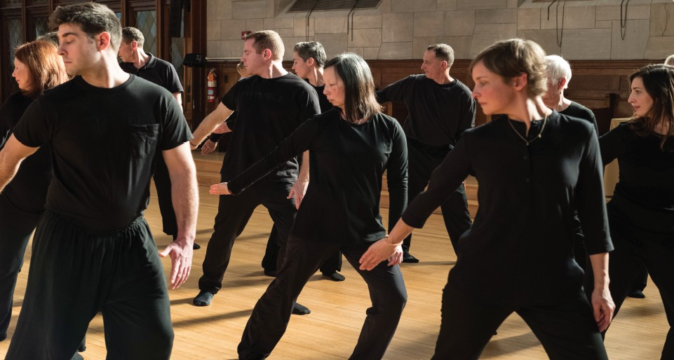
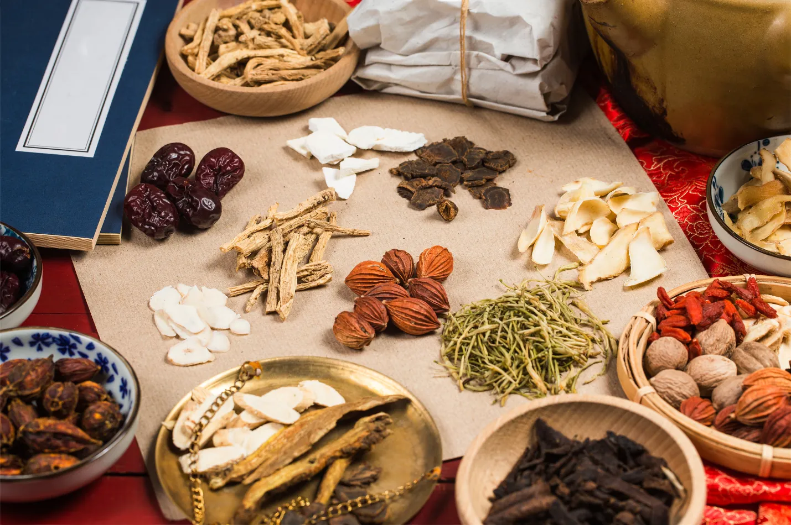

你將獲得什麼
龍之道氣功®的組成
五大組成
01
無名氣功動作
02
食療飲食計劃
03
五行意識
04
草本補充品
05
生活方式指引

組成 01
無名氣功
動作
動作
十個精選的無名氣功動作是本課程的基石。規律練習能清理身體、恢復整體能量。

組成 02
食療
飲食計劃
飲食計劃
我們建議的飲食方式支持能量平衡——選擇滋養特定臟腑系統的食物，並培養與飲食之間的健康關係。

組成 03
五行
意識
意識
古老的五行框架教你把身體的訊號——情緒波動、頭痛、關節僵硬——讀成訊息，而不是問題。一種新的自由，會成為你的生活方式。

組成 04
草本
補充品
補充品
和食物一樣，草本也帶有獨特的能量本質。為龍之道調配的草本能支持身體回到平衡——尤其建議在同時有多項健康困擾時使用。
組成 05
生活方式
指引
指引
這個部分幫助你在快節奏的世界中放慢腳步——學會聆聽身體真正的需要，並把這些教導編織進日常生活的節奏裡。